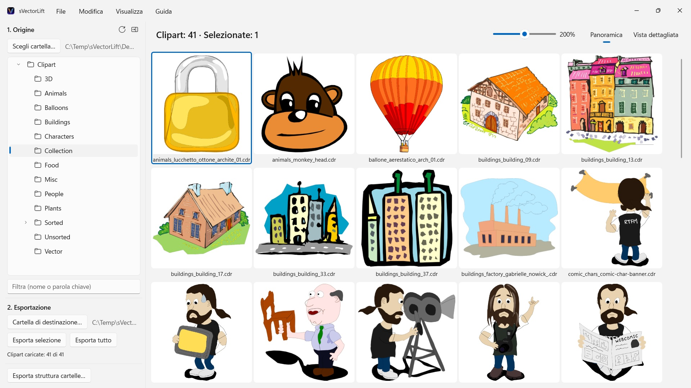
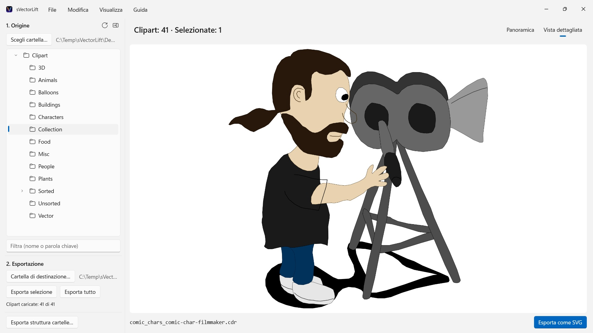

Migliaia di clipart vintage su CD di CorelDRAW, chiuse in formati che quasi nessun programma apre più. sVectorLift ti mostra intere raccolte a colpo d’occhio e le trasforma in veri SVG con cui puoi lavorare oggi.
 Guarda il video – 3 minuti su YouTube, in inglese con sottotitoli in italiano
Guarda il video – 3 minuti su YouTube, in inglese con sottotitoli in italiano


Da qualche parte sullo scaffale c’è un CD pieno di clipart che hai comprato anni fa. I file ci sono ancora, ma quasi nessun programma sul tuo PC li apre più, e ancora meno ti mostrano l’intera raccolta a colpo d’occhio.
Lingue supportate (25): Deutsch · English · Español · Français · Italiano · Nederlands · Português (Brasil) · Português (Portugal) · Svenska · Norsk · Suomi · Polski · Čeština · Hrvatski · Magyar · Română · Türkçe · Русский · Українська · فارسی · ไทย · 日本語 · 한국어 · 简体中文 · 繁體中文
L’app segue la lingua di visualizzazione di Windows.
sVectorLift rimette al lavoro quella grafica. Ricostruisce ogni disegno come vero SVG: nitido a qualsiasi dimensione, modificabile, pronto da usare in Illustrator, Affinity, Inkscape, Figma — o sul tuo sito. Non solo di nuovo visibile. Di nuovo utilizzabile. È questo il «lift» del nome: grafica vettoriale vintage, sollevata al livello degli strumenti con cui lavori oggi.
COSA APRE
- Documenti CorelDRAW (.cdr), dalla versione 6 alla 9
- Corel Binary Meta File (.cmx) — anche la prima variante CDRX, che altri strumenti si rifiutano di leggere
- Windows Metafile (.wmf)
- Computer Graphics Metafile (.cgm)
- QuickDraw 3D Metafile (.3dm, .3dmf), resi come immagine
- Scalable Vector Graphics (.svg), mostrati direttamente
Molti file con estensione .cdr non sono affatto documenti CorelDRAW, ma CMX: è esattamente per questo che i convertitori abituali si fermano. sVectorLift legge entrambi.
sVectorLift è pensato per le raccolte di clipart: disegni, simboli, illustrazioni. Non è un programma di impaginazione e non vuole ricostruire brochure di più pagine o esecutivi di stampa.
UNA VERA CONVERSIONE VETTORIALE
Qui non si fotografa un’anteprima. sVectorLift legge il disegno vero e proprio: tracciati e curve di Bézier, colori di riempimento, sfumature, contorni e tratteggi, riempimenti a motivo e texture, foto incorporate e oggetti di testo. Ne escono dati vettoriali autentici, che puoi scalare, ricolorare e modificare — non l’immagine di un disegno.
Le immagini puramente raster vengono invece esportate come PNG, così non si perde nulla.
Ti serve un’immagine invece di una grafica vettoriale? «Esporta come PNG» ed «Esporta come JPG» trasformano qualsiasi disegno in un’immagine, anche i file SVG, nella dimensione che scegli nelle Impostazioni.
SFOGLIARE LA RACCOLTA
- Albero delle cartelle sull’intera raccolta, sottocartelle comprese
- Griglia di anteprime vettoriali nitide, con cursore per la dimensione
- Vista di dettaglio, si sfoglia la cartella con i tasti freccia
- Filtro per nome o parola chiave
- Selezione multipla come in Esplora file: clic, Ctrl+clic, Maiusc+clic, selezione a rettangolo, Ctrl+A
- Apertura di un singolo file direttamente da Esplora file («Apri con» o doppio clic)
- Cartelle recenti che ricordano dove eri rimasto: sottocartella e file selezionato
- Esportazione della selezione o dell’intera cartella in un solo passaggio
- Conversione di intere strutture di cartelle, sottocartelle comprese, in un colpo solo: la struttura resta intatta nella cartella di destinazione
- Rinomina, mostra in Esplora file, sposta nel Cestino
- Riordino della raccolta con trascinamento della selezione su una cartella dell’albero: con le regole di Esplora file, Ctrl per copiare, Maiusc per spostare, e annullabile con Ctrl+Z; anche verso e da Esplora file
VELOCE E RIGUARDOSO CON IL TUO PC
Le anteprime vengono calcolate solo per ciò che stai guardando, in secondo piano e con cache. Le cartelle grandi si aprono subito, invece di bloccarsi per minuti su migliaia di file.
Tutto resta sul tuo PC. Nessuna connessione di rete, nessun account, nessuna raccolta di dati.
CorelDRAW è un marchio di Corel Corporation. sVectorLift è un’app indipendente e non è affiliata a Corel né approvata da Corel.
- Richiede Windows 11 o versioni successive
- 24 lingue
- Assistenza: SwiftAppsBavaria@gmx.net
- Informativa sulla privacy